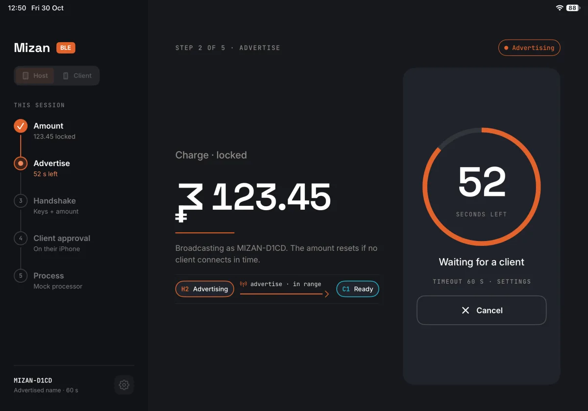
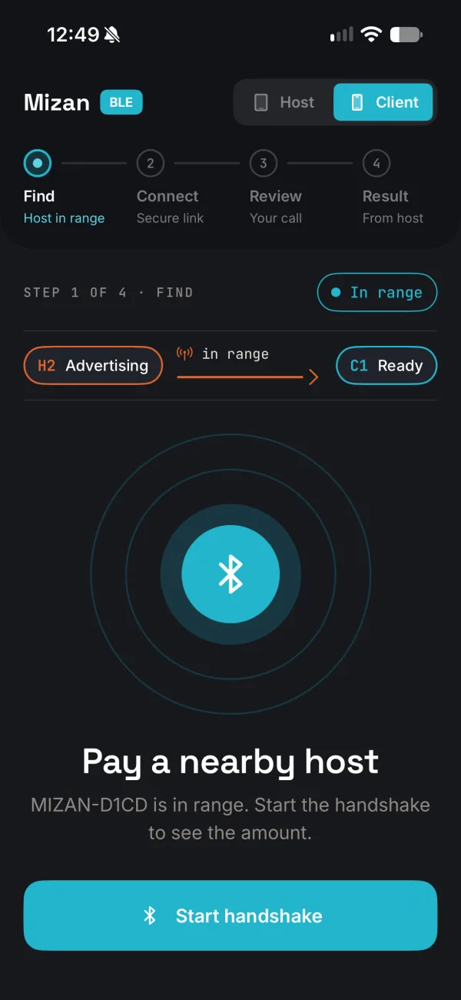
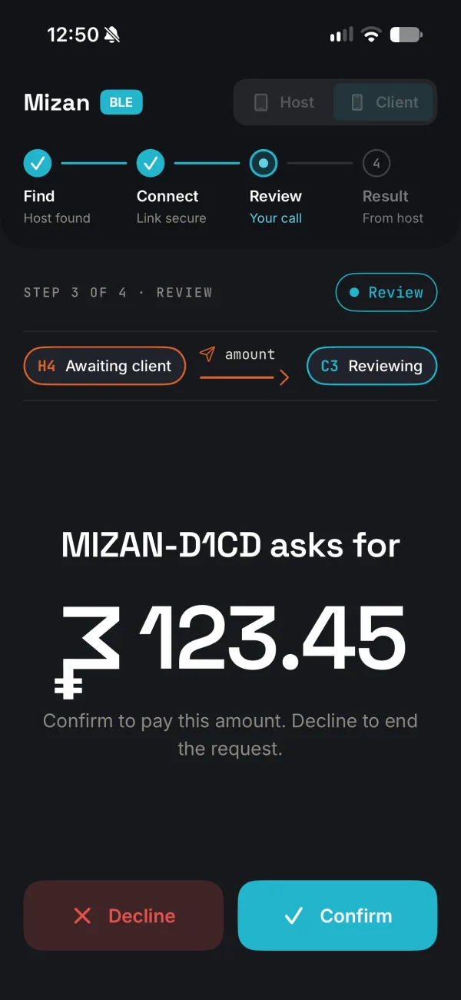

Начнём с разбора: что уже закрывает выбранный SDK или партнёр, где у кассы срывается платёж и сколько работы остаётся. В подтверждение — рабочий прототип на реальных iPad и iPhone с открытым кодом.
SDK даёт протокол. Остаётся работа в самом приложении: выбрать именно свою кассу, показать клиенту каждый исход, связать операцию с банковским контуром и проверить всё на устройствах. Проект имеет смысл, если у банка достаточно активных клиентов на iPhone и доступна инфраструктура приёма; это оцениваем на разборе.
В замерах Mizan сглаженный уровень сигнала менялся на 5–13 дБ в секунду при неподвижном телефоне. Выбор «по самому сильному» на расстоянии вытянутой руки мигает между кассой и «поднесите ближе».
Отказ, отмена кассиром, тайм-аут, обрыв связи, выключенный Bluetooth. При обрыве после подтверждения интерфейс должен отличать отказ от неизвестного результата, а итог — подтверждать банковский контур.
Размер сообщения ограничен согласованным MTU. В роли кассы iPad не может сам разорвать соединение через Core Bluetooth — завершать операцию приходится иначе.
Сумма и решение не читаются в эфире, сообщение одной операции не повторяется в другой, в журналах нет секретов. Подлинность кассы — отдельная задача, её решают вместе с банком и платёжной системой.



от соединения до суммы на экране iPhone в замерах на iPad Pro 11" и iPhone 15 Pro. Поиск кассы и банковская обработка сюда не входят.
Swift-тестов проверяют логику прототипа: каждый шаг операции — конечный автомат, исходы — таблицы «событие → состояние».
сценарных прогонов на симуляторе с имитацией радио проверяют экраны и то, что в журнале нет суммы, ключа или идентификатора устройства.
Mizan показывает BLE-взаимодействие двух устройств. В проекте банка работа идёт поверх SDK НСПК или партнёра.
Сообщения шифруются ключом каждой операции (P-256 ECDH, HKDF, AES-GCM), повторы отклоняются. Но подлинность кассы и получателя не подтверждается: для денег нужна отдельная схема.
Фоновый сценарий в Mizan не реализован. Совместимость с терминалами и устойчивость в торговой точке проверяются отдельно.
Код: github.com/igor1309/mizan-ble. Открытый репозиторий позволяет оценить инженерный подход, но не заменяет аудит. Подробный разбор — в трёх статьях на igor1309.dev.
Встраиваю выбранный банком SDK «Волны» или партнёрское решение: выбор кассы, все исходы операции на экране, связь с банковским контуром, тесты и прогоны без радио, проверка на устройствах. На разборе определяем, что уже закрывает поставщик и где нужна дополнительная работа.
Гипотеза для точек без POS: рынки, курьеры, небольшие кафе. «Волна» сегодня рассчитана на Bluetooth-терминалы, SoftPOS на Android работает по NFC. На первом этапе сравниваем готовые решения, QR СБП и собственную реализацию, проверяем устройства и экономику.
[Цена], [объём участия]. Вместе с ИБ и комплаенсом банка: применимые требования ЦБ и платёжной системы, границы обработки данных, модель угроз. Результат — схема интеграции, зависимости, риски, критерии пилота и оценка бюджета.
Ориентир — 6–8 недель после разбора и получения доступов. Одна точка, сотрудники банка с iPhone. Замеры: время у кассы, доля успешных оплат. Промышленный запуск оценивается отдельно.
Код, спецификации, тесты и прогоны — команде банка. Объём сопровождения и передача знаний фиксируются в договоре.
Руковожу iOS-разработкой в банке. Работаю как внешний iOS-инженер с загрузкой [X]. Пишу о разработке на igor1309.dev.
Написать в Telegram Код Mizan BLE